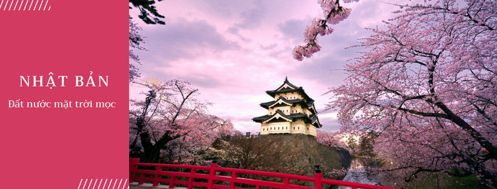

Welcome to TravelWorld
Nếu bạn băn khoăn không biết nên đi đâu vào các kì nghỉ hay dịp lễ thì TravelWorld sẽ giúp bạn hiểu rõ hơn về các địa điểm nổi tiếng cũng như văn hóa của đất nươc bạn lựa chọn để tận hưởng kì nghỉ. Xin chào mừng đến với TravelWorld
Du lịch Bangkok–Thái Lan

Nếu bạn đang tìm kiếm một chuyến du lịch nước ngoài giá rẻ để “đổi khẩu vị”, bạn sẽ không cần phải đau đầu suy nghĩ khi chọn nước láng giềng Thái Lan để có những trải nghiệm mới. Bangkok được biết đến là một trong những thủ đô năng động nhất Đông Nam Á cùng với sự hấp dẫn về văn hóa, cuộc đường phố sôi động, ẩm thực cuốn hút và phong phú, giá cả phải chăng. Bangkok là sự pha trộn tương phản giữa những tòa nhà chọc trời hiện đại và những đền thờ Phật giáo cổ xưa.
Du lịch Nhật Bản
Đất nước mặt trời mọc hay xứ sở hoa anh đào là những cái tên thân thuộc gần gũi, gợi nhắc về đất nước Nhật Bản từ lâu nay đã không còn xa lạ với người dân Việt. Ngày nay, Nhật Bản trở thành một điểm đến đầy sức hút không chỉ bởi bản sắc văn hóa riêng biệt, những con người với phẩm chất đáng ngưỡng mộ, một xã hội văn minh hiện đại mà xứ Phù Tang còn sở hữu những danh lam thắng cảnh tuyệt đỉnh, các di sản thế giới.
Du lịch Thổ Nhĩ Kì
Một địa điểm du lịch nước ngoài từ 20 triệu nằm giữa hai lục địa Á và Âu đó là Thổ Nhĩ Kỳ. Nơi đây được mệnh danh là “ngã tư các nền văn minh thế giới”, tạo nên sự đa dạng về địa lý, văn hóa, tôn giáo và lối sống của người dân nơi đây. Chính sự giao thoa hoàn hảo này đã biến Thổ Nhĩ Kì trở thành quốc gia độc đáo nhất và vùng đất cuốn hút khách du lịch trên toàn thế giới bởi những công trình kiến trúc cổ đại, di sản văn hóa đặc sắc, nền ẩm thực phong phú cùng những sử thi hào hùng, vang danh một thời.